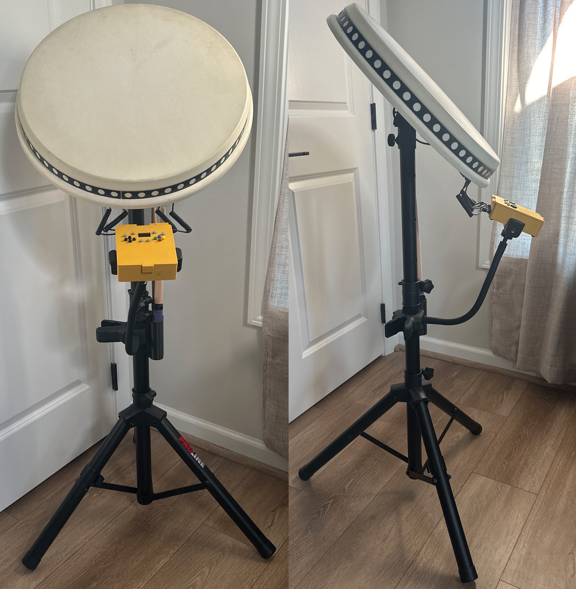

Smarter. Simpler. Better.

In Japanese, 'ouchi' (おうち) means 'home' and 'taiko' (太鼓) means 'drum.' Together, 'OuchiTaiko' represents bringing the authentic Taiko experience from the Arcade into your own space.
The OuchiTaiko Project is an open-source build guide for a professional arcade-grade Taiko drum controller. This guide represents 8 months of research and development, achieving arcade-level performance through intelligent Adaptive Baseline Software Intelligence (ABSI) and revolutionary auto-calibration.
Key Features:
• Automatic Sensitivity Calibration • Built-In Controller
• OLED Display • 14 Input Modes
• Zero Coding Required